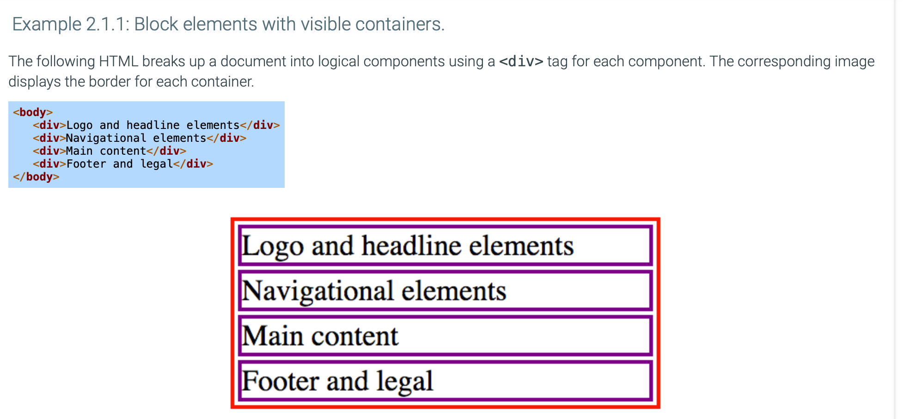
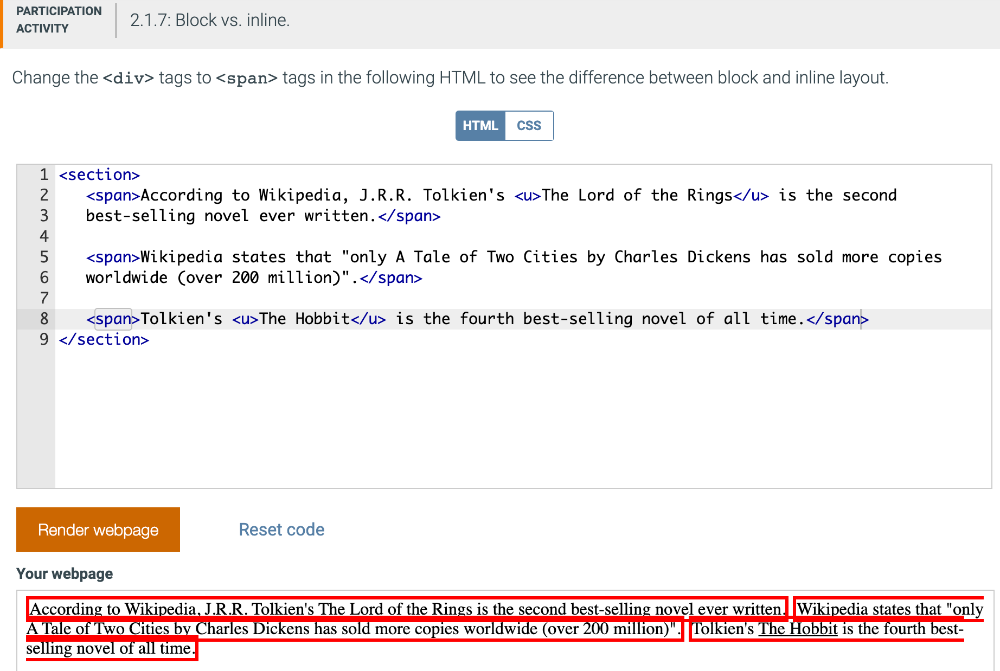
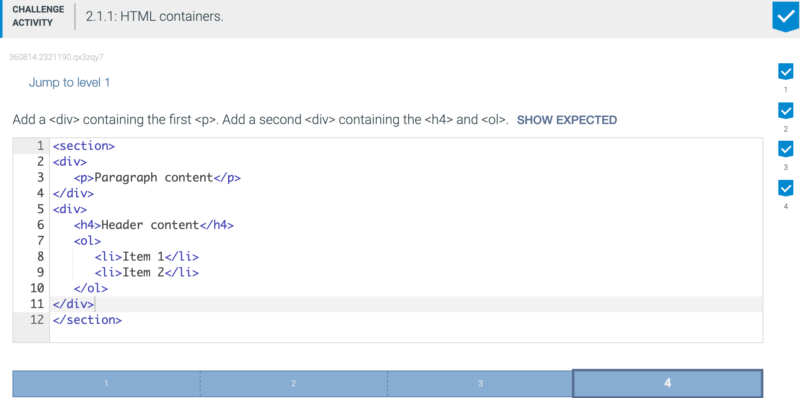

A container is any part of a web document body that has opening and closing tags. Web developers typically create many containers as a convenience to assist
in organizing and formatting content. Ex: Containers can be formatted by applying styles to adjust margins, padding, horizontal and vertical alignment, and
other visual presentation attributes.
A parent container is the container in which another element resides.
HTML elements can be categorized as either block or inline. A block element (sometimes called a block-level element) fills the width of the element's parent container and can contain other block elements, inline elements, and text. Block elements include <h1>, <table>, and <p>.
Some block elements cannot be contained within certain other block elements when the semantics are unclear. Ex: The <p> element cannot contain another <p> element.
A block element is typically displayed starting and ending on new lines. Ex: The <ol> tag is a block tag that fills the entire width of the parent container, and each ordered list starts on a new line separate from previous and following blocks.
A <div> element is a generic element for creating block containers to facilitate managing page content and is the only block element with no semantic meaning, unlike other block elements such as <p> and <table>.
By default, web browsers do not display container borders. For clarity, the container borders are visible in the following examples.

An inline element fills the minimum space possible in the element's parent container and can only contain text or other inline elements. Ex: The <a> element is an inline element that creates a hyperlink container as big as the link's internal content; a hyperlink does not fill the width or height of the link's parent paragraph.
The <span> element is the generic element for creating inline containers to facilitate managing content on the page. Unlike other inline elements, such as <a> and <em>, the <span> element has no semantic meaning.
Since <div> and <span> do not have semantic meaning, <div> and <spangt; are used primarily for presentation and interaction purposes. Good practice is to use tags such as <address> and <article> that convey semantic meaning when creating containers, and use <div> and <span> only when no other tags are appropriate.
The difference between block and inline elements is visible in Chrome's DevTools. In the screenshot below-left, the mouse hovers over the <p> tag in the DevTools, and a rectangle appears around the entire paragraph in the web page. The rectangle spans the browser width because <p> is a block element. Below-right, the mouse hovers over the <span> tag, but the rectangle is only as wide as the span's contents because <span> is an inline element.

